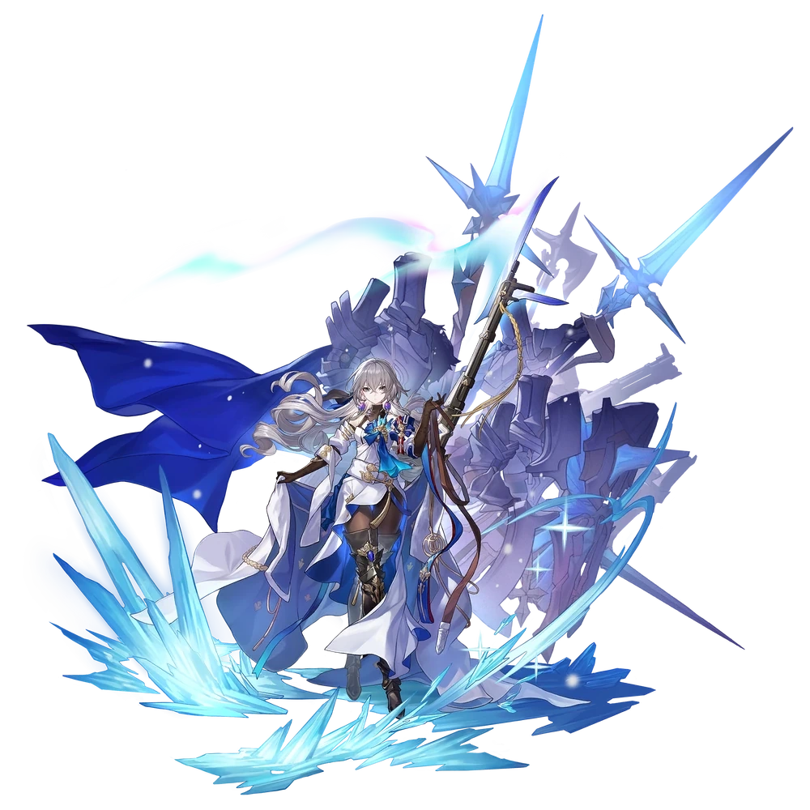
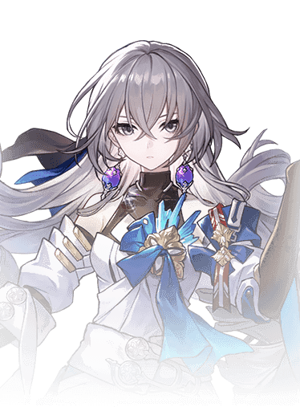

Descripcion del personaje
Bronya es un personaje de 5 estrellas y de la vía de la Armonía de Honkai Star Rail que destaca por ser sin duda uno de los mejores Supports (en este caso Buffer) de todo el juego ya que aporta muy buenos buff al equipo.
Cuenta con un arsenal de «buffeo» increíble con potenciaciones al ATQ, al daño, al Daño CRIT, la DEF e incluso puede adelantar la acción de un compañero mientras de paso le potencia (también puede eliminar estados negativos de tus personajes). Es un personaje que puede encajar en la gran mayoría de equipos ya que casi todos sus compañeros se beneficiarán mucho por ir junto a ella, pero tendremos que tener mucho cuidado respecto a la gestión de Puntos de Acción.
Introduccion al personaje
Es la heredera de Belobog, una de las principales ciudades en la región nevada de Jarilo-VI. A diferencia de la Bronya de Honkai Impact, esta versión de Bronya se encuentra en medio de una lucha política y social en su ciudad, que está dividida entre las clases altas de la superficie y los marginados en las zonas subterráneas.
Bronya es fuerte, determinada y compasiva, tratando de equilibrar su sentido del deber con su deseo de hacer justicia y mejorar la vida de todos en su ciudad. Como personaje jugable en Star Rail, Bronya tiene un rol de apoyo, capaz de aumentar el daño y los turnos de sus aliados, lo que la convierte en una pieza clave en el equipo.

Calidad del personaje

VIA del personaje
Armonia

Estadisticas del personaje
- PV: 1241
- ATQ: 582
- DEF: 533
- VEL: 99